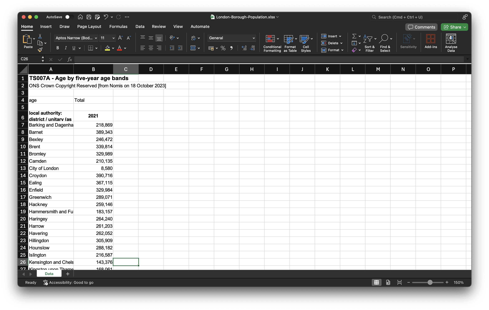
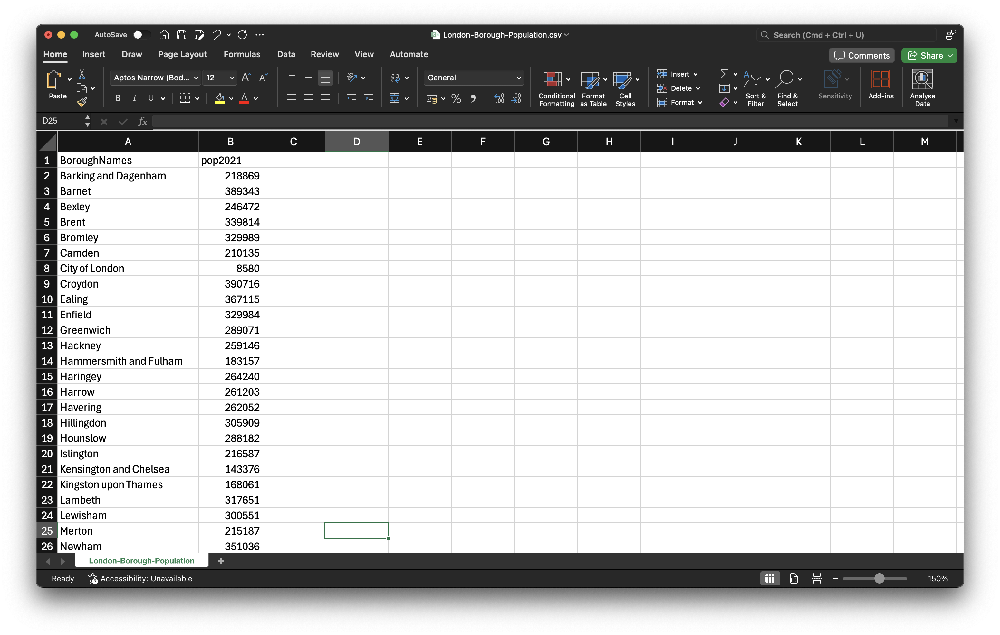
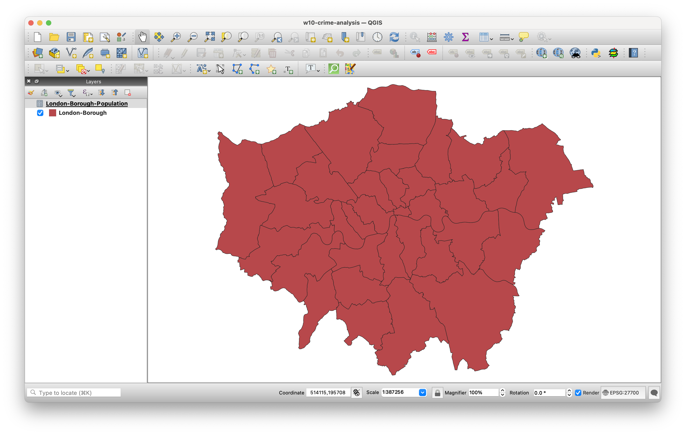
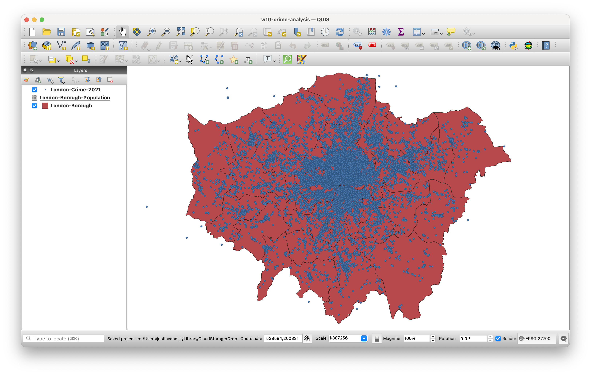
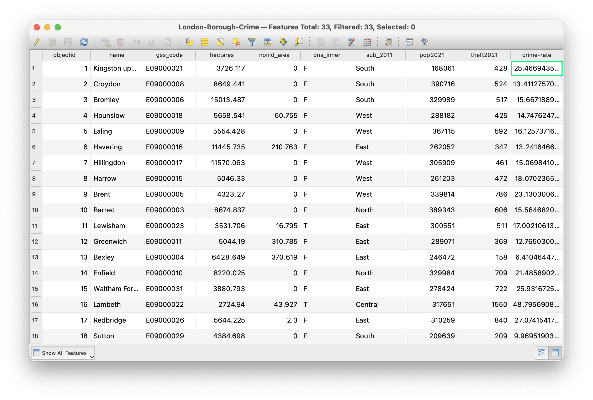
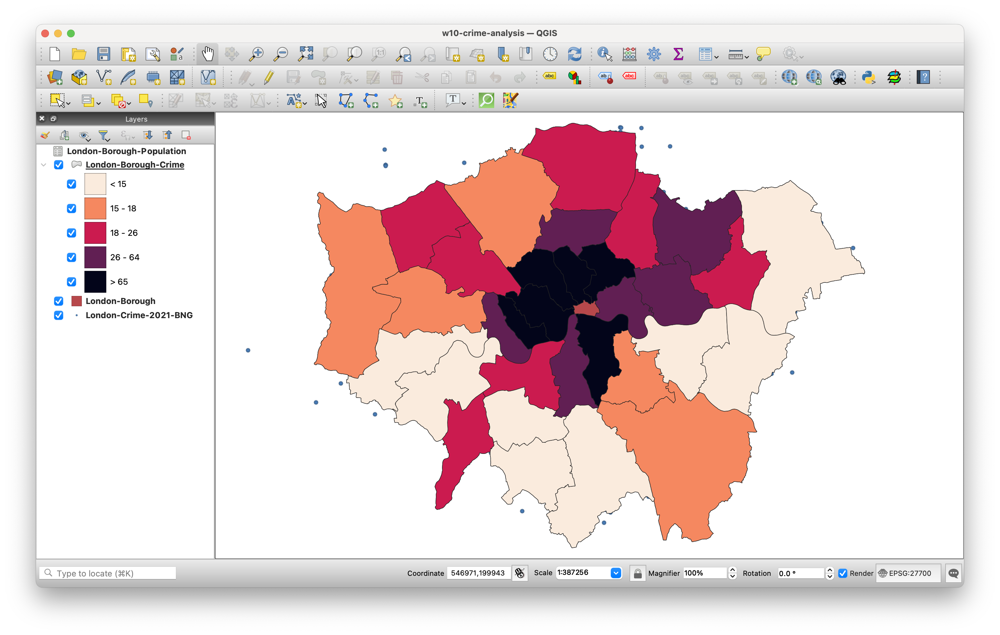
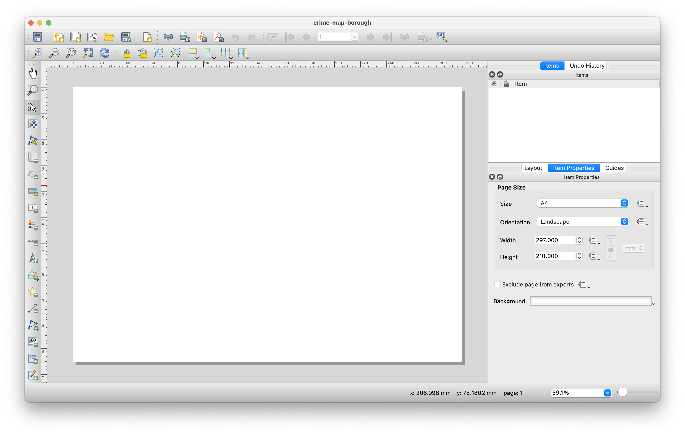
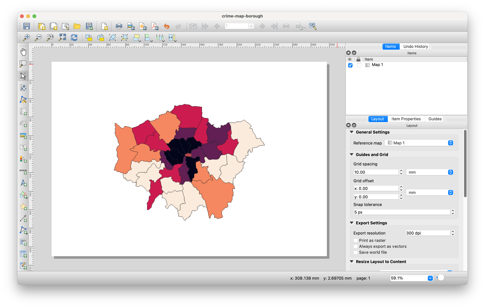
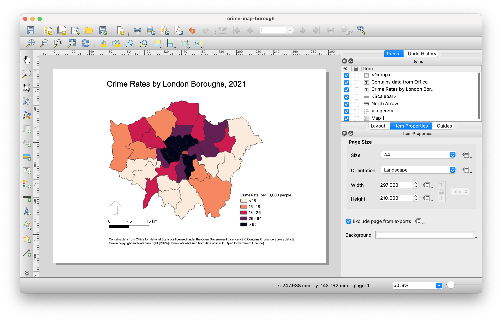

5 Spatial Analysis II
Building on last week’s introduction to creating thematic maps in QGIS, this week we take it a step further by conducting some basic spatial analysis. Our focus will be on aggregating point event data (such as crime incidents) to administrative geographies and then mapping the aggregated results.
5.1 Lecture slides
You can download the slides of this week’s lecture here: [Link].
5.2 Reading list
Essential readings
Suggested readings
- Longley, P. et al. 2015. Geographic Information Science & systems, Chapter 12: Geovisualization, pp. 266-289. [Link]
5.3 Crime in London
In this week’s practical we will explore the spatial patterns of crime, specifically theft from persons across London boroughs in 2021. For our crime data, we will use data extracted from the Police Data Portal, which provides access to tabular data for crimes recorded by various UK police forces since 2017. You can download the relevant dataset via the link provided below.
Save the file inside your data folder.
| File | Type | Link |
|---|---|---|
| Theft from persons in 2021 | csv |
Download |
You may remember that we used this data portal last year during Geography in the Field II.
In addition to the crime data, we will also need the spatial boundaries of the London boroughs. To access the spatial boundaries of the London boroughs, you should:
- Navigate to the London Datastore: [Link].
- Click on Data in the navigation menu.
- Type London Boroughs into the search field.
- Download the
GeoPackagecontaining the boundaries of each of London’s 33 boroughs. - Rename the file to
London-Borough.gpkgand save it in yourdatafolder.
A lot of data about London is collated by the Greater London Authority and made available through the London Datastore. Whereas some of the data is a bit outdated, it is a good place to get some data specific to London.
When studying aggregated point event data, it is important to normalise the data using an appropriate denominator. We therefore also need the population figures for each borough. To get the 2021 borough population counts, you should:
- Navigate to the Nomis portal: [Link]
- Click on Query data in the Data Downloads panel.
- Click on Census 2021 -> Topic Summaries.
- Click on TS007A - Age by five-year age bands.
- Select Geography and set Local authorities: district / unitary (as of April 2023) to Some.
- Under List areas within select London. Click on Tick all.
- Click on Download data at the left hand side of the screen.
- Once the data is ready for download, save it to your computer in your
datafolder asLondon-Borough-Population.xlsx.
5.3.1 Data preparation
To prepare the borough population data for use in QGIS, you should:
- Open the dataset in your spreadsheet editing software. Locate the columns containing the borough names and their associated population counts. Copy these two columns into a new spreadsheet, and rename the columns to
BoroughNamesandpop2021respectively. - Format the
pop2021column so that it is recognised as being a numeric column. - Save the file as a new
csvin yourdatafolder asLondon-Borough-Population.csv.

If you are struggling with the data preparation of the borough population, refer back to last week’s data cleaning section.
Now we have our datasets sorted out, we can move to QGIS to analyse our crime dataset.
- Start QGIS
- Click on Project -> New. Save your project as
w10-crime-analysis. Remember to save your work throughout the practical. - Before we get started with adding data, we will first set the Coordinate Reference System of our Project. Click on Project -> Properties – CRS. In the Filter box, type British National Grid. Select OSGB 1936 / British National Grid - EPSG:27700 and click Apply. Click OK.
We will start by adding the spatial layer containing the London boroughs.
- Click on Layer -> Add Layer -> Add Vector Layer.
- With File select as your source type, click on the small three dots button and navigate to your
London-Borough.gpkgfile in yourdatafolder. Select the file, then click Add. You may need to close the box after adding the layer.

To link the spatial data to the population data, we need to join the datasets. Since we covered the steps for joining datasets last week, we will only provide a broad overview of the process:
- Load the
London-Borough-Population.csvdataset you just created as a Delimited Text File Layer in QGIS. - Join the two datasets together using the Joins tab in the Properties box of the borough layer. Use the
BoroughNamesfield as the unique identifier for the join.
Because the population file does not include borough codes, we have to use borough names to join the datasets together. While this approach works here (and is easy to manually verify since there are only 33 records), using codes is generally preferred to reduce the risk of errors or incomplete joins. It us often worth taking the time to find these codes, as they ensure more reliable and accurate data linking.
We will now load and map our crime data. This will be done using the Delimited Text File Layer option, similar to how you previously loaded the borough population data, but this time we will be adding point coordinates to visualise the crime data as points on the map.
- Click on Layer -> Add Layer -> Add Delimited Text File Layer.
- Click on the three dots button next to File Name and navigate to your
London-Crime-2021in yourdatafolder. - Your file format should be set to
csv. In Record and Fields Options tickDecimal separator is comma,First record has field names,Detect field typesandDiscard empty fields. - Under Geometry Definition, select
Point coordinatesand set the X field toLongitudeand the Y field toLatitude. The Geometry CRS should be:EPSG:4326 - WGS84. Click Add.
- Click on the three dots button next to File Name and navigate to your
After clicking Add, you will receive a pop-up in QGIS regarding transformations. Transformations are algorithms used to convert data from one Coordinate Reference System (CRS) to another. In this case, QGIS recognises that the Project CRS is set to the British National Grid, while the Layer you are adding uses the WGS84 CRS. QGIS is asking which transformation it should apply to align the Layer with the Project CRS. One of the key strengths of QGIS is its ability to project data on the fly. This means that once QGIS knows which transformation to use, it will automatically convert all Layers to match the Project CRS, ensuring they are rendered accurately in relation to one another.
- Click OK to accept QGIS’ suggested on-the-fly projection. You should now see your crime dataset displayed as points, layered on top of the London borough polygons.

- We can confirm the temporary nature of the on-the-fly projection by checking the CRS of the
London-Crime-2021layer. To do this, right-click on the layer, then select Properties -> Information. In the information panel, you should see that the CRS of the layer remains asWGS84.
To ensure that our analysis is both accurate and efficient, it is best to reproject the crime data to the same CRS as our administrative datasets.
- Back in the main QGIS window, click on Vector -> Data Management Tools -> Reproject Layer. Fill in the parameters as follows:
- Input Layer:
London-Crime-2021 - Target CRS:
Project CRS: EPSG: 27700 - Reprojected: Click on the three buttons and Save to GeoPackage to create a new data file.
- Save it in your
datafolder asLondon-Crime-2021-BNG.gpkg, usingLondon-Crime-2021-BNGas Layer Name. - Click Run. You should now see the new data layer added to your project. You can now close the Reproject Layer tool.
- Input Layer:
- You can now also remove the original
London-Crime-2021dataset, only keeping the reprojected version.
5.3.2 Data aggregation
The next step of our analysis involves aggregating the crime events to our administrative geography. We will use the Count Points in Polygons in the Analysis toolset to count how many crimes have occurred in each borough. This will provide us with a count statistic that we can subsequently normalise using population data to create a crime rate statistic.
- Click on Vector -> Analysis Tools -> Count Points in Polygons.
- Within the toolbox, select the parameters as follows:
- Polygons:
London-Borough - Points:
London-Crime-2021-BNG[Note how both our data layers state the same CRS.] - Weight field: leave blank
- Class field: leave blank
- Count field names:
theft2021 - Click on the three dot button and select Save to GeoPackage:.
- Save the output as
London-Borough-Crime.gpkg, withLondon-Borough-Crimeas Layer Name.
- Polygons:
- Click Run and Close the dialogue box. You should now see the
London-Borough-Crimelayer added to your Layers panel - Right-click on the
London-Borough-Crimelayer and open the Attribute Table. If all went well, you should see atheft2021column next to yourpop2021column.
We can now calculate the crime rate:
- With the Attribute Table of your
London-Borough-Crimelayer still open, click on the pencil icon in the top left corner to enable Editing mode.
Editing mode allows you to modify both the Attribute Table values and the geometry of your data.
- Whilst in the Editing mode, click on New Field button (hotkeys:
ctrl + worcmd + wand fill in the Field Parameters as follows:- Name:
crime-rate - Comment: leave blank
- Type: Decimal number
- Name:
- Click OK. You should now see a new field added to the Attribute Table.
The new field contains NULL values for each row, so we need to populate the column using the Field Calculator.
- Whilst still in the Editing mode, click on the Abacus button (
ctrl + iorcmd + i), which is known as the Field Calculator. - In the Field Calculator window:
- Check the Update existing field box.
- Use the drop-down to select the
crime-ratefield. - In the Expression editor, add the following expression:
( "theft2021" / "pop2021" ) * 10000and click OK.
- Click on the Save button to save these edits. Click again on the Pencil button to exit Editing mode.

London-Borough-Crime layer after the crime rate calculation.The crime-rate is stored as a decimal as this is required for the calculation to succeed, but ultimately you cannot have half a crime. You can convert the decimal values to integers by creating a new field using the Field Calculator. Instead of ticking the Update existing field box you would now keep the Create a new field box ticked. Name the new field crime-rate-int, make sure the Output field type is set to Whole number (integer), and in the Expression editor enter the following expression: to_int("crime-rate"). You can save these changes by clicking the Save button.
5.3.3 Data mapping
Now the dataset has been prepared, it is time to make a map. First thing we need to do is symbolise the map with an appropriate colour scheme. Go to Properties and symbolise your map with Graduated colours. You need to decide on an appropriate data classification and colour scheme. For reference, Figure 6 shows an example of a possible classification and colour scheme.
If you are looking for inspiration beyond the default colour selection, have a look at the online Colorbrewer 2.0 tool.

Once you are happy with the way your borough data looks, we can move to the Print Layout to turn the symbolised map layer into a publishable map.
The Print Layout in QGIS is a dedicated workspace that allows users to create high-quality maps for publication and presentation. It provides tools to add and arrange various elements, such as map layers, legends, scale bars, text labels, and images on a blank canvas.
From the main QGIS window, click on Project -> New Print Layout. In the small box that first appears, call your new print layout: crime-map-borough. A new window should open up that shows a blank canvas.

On the left-hand side of the window, you will find buttons to add various print layout items, including the current QGIS map canvas, text labels, images, legends, scale bars, basic shapes, arrows, attribute tables, and HTML frames. This toolbar also includes buttons for navigation, allowing you to zoom in on specific areas and pan the view within the layout, as well as tools to select and move layout items.
On the right-hand side of the window, there are two sets of panels. The upper panel contains the Items and Undo History panels, while the lower panel includes Layout, Item Properties, and Guides. For our purposes today, we will focus on the bottom panel, as the Layout panel controls the overall appearance of our map, while the Item Properties panel allows us to customise elements such as titles and legends that we may add to our map.
Working with maps in the Print Layout is relatively straightforward, but it can become a bit fiddly, especially when creating more complex maps. To effectively manage your layout, it is important to understand features like locking items to prevent accidental changes. If you get stuck, have a look at the training manual or the detailed documentation.
To begin creating your map, use the Add Map tool to draw a box where a snapshot of the currently active map displayed in your QGIS main window will be loaded.
When you hover your cursor over the icons in the Print Layout toolbox, the names of the tools will appear after about a second.
- Click on the Add Map tool and draw a box on your canvas to to load the map layers that are active in the main QGIS window. You can easily move and resize the map box by clicking on it and dragging the corners, just like you would in Word or similar applications.

- With your map selected, head to the Items Properties panel and look for the Scale parameter.
- Here we can manually edit the scale of our map to find the right zoom level.
- Have a go at entering different values and see what level you thin suits the size of your map.
- If you need to move the position of the map within the box, look for the Move Item Content tool in the left-hand side toolbar.
- Click on the Add Legend tool and draw a box on your canvas where you want the legend to appear. You will notice that the legend automatically generates an entry for every layer in the Layers panel of the main QGIS application.
- In the Item Properties, uncheck
Auto updateto prevent QGIS from automatically populating your legend, allowing you to customise it instead. - Next, remove all layers from the legend except for the
London-Borough-Crimelayer by clicking the-(minus) button. - Finally, change the label of the legend to Crime Rate (per 10,000 people).
- Move the legend to an appropriate position on the canvas - resize if necessary.
- In the Item Properties, uncheck
You can further customise the legend’s appearance, including the type, size, and alignment of the font.
- Now that we have our two maps ready, we can add the main map elements using the tools in the left-hand toolbar:
- Add a scale bar: Use the Item Properties to adjust the style, number of segments, font, and other settings.
- Add a north arrow: Use the North Arrow tool to draw a box where you want the arrow to appear, then customise its appearance using the Item Properties panel.
- Create a title at the top of the page using the Add Label tool. You can format the title as needed.
- Finally add a box detailing the data sources that have been used: Contains data from Office for National Statistics licensed under the Open Government Licence v.3.0. Contains Ordnance Survey data © Crown copyright and database right [2024]. Crime data obtained from data.police.uk (Open Government Licence). You can again use the Add Label tool for this.
Once you have added these map elements, you should have a map canvas that could look something like this:

The only remaining step is to export our map as an image. Navigate to Layout -> Export as Image and then save it as London-Borough-2021-crime-rate.png.
5.4 Homework task
This concludes this week’s tutorial. Now complete the following homework tasks:
- Load last week’s
London-LSOA2021.gpkginto QGIS. - Aggregate the
London-Crime-2021-BNG.gpkgpoint dataset to the 2021 London LSOAs using the Count Points in Polygons tool. - Calculate the crime rate per
1000people using the Field Calculator. - Decide on an appropriate data classification and colour scheme.
- Create a publishable map that includes all essential map elements.
- Export your map as an image.
Paste the exported map into the appendix of your assignment, include a few sentences interpreting the results. Consider how different levels of aggregation that we have used affect your perception of theft rates in London.
5.5 Before you leave
That is us all done. Remember to save your project. Perhaps time to focus on your final assignment?